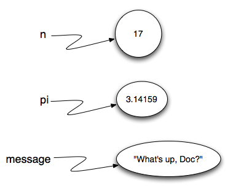

1.3. Data, Types, and Variables¶
1.3.1. Values and Data Types¶
A value is one of the fundamental things — like a word or a number —
that a program manipulates. The values we have seen so far are 5 (the
result when we added 2 + 3), and "Hello, World!". We often refer to these values as objects and we will use the words value and object interchangeably.
Note
Actually, the 2 and the 3 that are part of the addition above are values(objects) as well.
These objects are classified into different classes, or data types: 4
is an integer, and "Hello, World!" is a string, so-called because it
contains a string or sequence of letters. You (and the interpreter) can identify strings
because they are enclosed in quotation marks.
If you are not sure what class a value falls into, Python has a function called type which can tell you.
In [1]: type("Hello, World!")
Out[1]: str
In [2]: type(17)
������������Out[2]: int
In [3]: "Hello, World"
������������������������Out[3]: 'Hello, World'
Not surprisingly, strings belong to the class str and integers belong to the class int.
Continuing with our discussion of data types, numbers with a decimal point belong to a class called float, because these numbers are represented in a format called floating-point. At this stage, you can treat the words class and type interchangeably. We’ll come back to a deeper understanding of what a class is in later chapters.
In [4]: type(3.2)
Out[4]: float
What about values like "17" and "3.2"? They look like numbers, but they
are in quotation marks like strings.
In [5]: type("17")
Out[5]: str
In [6]: type("3.2")
������������Out[6]: str
They’re strings!
Strings in Python can be enclosed in either single quotes (') or double
quotes ("), or three of each (''' or """)
In [7]: type('This is a string.')
Out[7]: str
In [8]: type("And so is this.")
������������Out[8]: str
In [9]: type("""and this.""")
������������������������Out[9]: str
In [10]: type('''and even this...''')
������������������������������������Out[10]: str
Double quoted strings can contain single quotes inside them, as in "Bruce's
beard", and single quoted strings can have double quotes inside them, as in
'The knights who say "Ni!"'.
Strings enclosed with three occurrences of either quote symbol are called
triple quoted strings. They can contain either single or double quotes:
In [11]: '''"Oh no", she exclaimed, "Ben's bike is broken!"'''
Out[11]: '"Oh no", she exclaimed, "Ben\'s bike is broken!"'
Triple quoted strings can even span multiple lines:
In [12]: message = """This message will
....: span several
....: lines."""
....:
In [13]: message
Out[13]: 'This message will\nspan several\nlines.'
In [14]: print(message)
���������������������������������������������������This message will
span several
lines.
In [15]: """This message will span
....: several lines
....: of the text."""
....:
�����������������������������������������������������������������������������������������Out[15]: 'This message will span\nseveral lines\nof the text.'
Python doesn’t care whether you use single or double quotes or the three-of-a-kind quotes to surround your strings. Once it has parsed the text of your program or command, the way it stores the value is identical in all cases, and the surrounding quotes are not part of the value.
Note
Notice that when we evaluate a multiline string, the newlines are
represented by the special character "\n". On the otherhand, when a
multiline string is printed with the print function, the new lines are
rendered as new lines.
In [16]: 'This is a string.'
Out[16]: 'This is a string.'
In [17]: """And so is this."""
�����������������������������Out[17]: 'And so is this.'
So the Python language designers usually chose to surround their strings by single quotes. What do you think would happen if the string already contained single quotes?
Check your understanding
-
data-2-1: How can you determine the type of a variable?
- (A) Print out the value and determine the data type based on the value printed.
- You may be able to determine the data type based on the printed value, but it may also be deceptive, like when a string prints, there are no quotes around it.
- (B) Use the type function.
- The type function will tell you the class the value belongs to.
- (C) Use it in a known equation and print the result.
- Only numeric values can be used in equations.
- (D) Look at the declaration of the variable.
- In Python variables are not declared.
-
data-2-2: What is the data type of ‘this is what kind of data’?
- (A) Character
- It is not a single character.
- (B) Integer
- The data is not numeric.
- (C) Float
- The value is not numeric with a decimal point.
- (D) String
- Strings can be enclosed in single quotes.
1.3.2. Type conversion functions¶
Sometimes it is necessary to convert values from one type to another. Python provides
a few simple functions that will allow us to do that. The functions int, float and str
will (attempt to) convert their arguments into types int, float and str
respectively. We call these type conversion functions.
The int function can take a floating point number or a string, and turn it
into an int. For floating point numbers, it discards the decimal portion of
the number - a process we call truncation towards zero on the number line.
Let us see this in action:
In [18]: 3.14
Out[18]: 3.14
In [19]: int(3.14)
��������������Out[19]: 3
In [20]: 3.9999
�������������������������Out[20]: 3.9999
In [21]: int(3.9999) # This doesn't round to the closest int
�����������������������������������������Out[21]: 3
In [22]: 3.0
����������������������������������������������������Out[22]: 3.0
In [23]: int(3.0)
�����������������������������������������������������������������Out[23]: 3
In [24]: -3.999
����������������������������������������������������������������������������Out[24]: -3.999
In [25]: int(-3.999) # Note that the result is closer to zero
��������������������������������������������������������������������������������������������Out[25]: -3
In [26]: "2345"
��������������������������������������������������������������������������������������������������������Out[26]: '2345'
In [27]: int("2345") # parse a string to produce an int
������������������������������������������������������������������������������������������������������������������������Out[27]: 2345
In [28]: 17
��������������������������������������������������������������������������������������������������������������������������������������Out[28]: 17
In [29]: int(17) # int even works on integer
��������������������������������������������������������������������������������������������������������������������������������������������������Out[29]: 17
In [30]: int("23bottles")
��������������������������������������������������������������������������������������������������������������������������������������������������������������---------------------------------------------------------------------------
ValueError Traceback (most recent call last)
<ipython-input-30-f9490e7a2c12> in <module>()
----> 1 int("23bottles")
ValueError: invalid literal for int() with base 10: '23bottles'
The last case shows that a string has to be a syntactically legal number,
otherwise you’ll get one of those pesky runtime errors. Modify the example by deleting the
bottles and rerun the program. You should see the integer 23.
The type converter float can turn an integer, a float, or a syntactically
legal string into a float.
In [31]: float("123.45")
Out[31]: 123.45
In [32]: type(float("123.45"))
����������������Out[32]: float
The type converter str turns its argument into a string. Remember that when we print a string, the
quotes are removed. However, if we print the type, we can see that it is definitely str.
In [33]: str(17)
Out[33]: '17'
In [34]: str(123.45)
��������������Out[34]: '123.45'
In [35]: type(str(123.45))
��������������������������������Out[35]: str
Check your understanding
- (A) Nothing is printed. It generates a runtime error.
- The statement is valid Python code. It calls the int function on 53.785 and then prints the value that is returned.
- (B) 53
- The int function truncates all values after the decimal and prints the integer value.
- (C) 54
- When converting to an integer, the int function does not round.
- (D) 53.785
- The int function removes the fractional part of 53.785 and returns an integer, which is then printed.
data-2-3: What value is printed when the following statement executes?
print( int(53.785) )
1.3.3. Variables¶
One of the most powerful features of a programming language is the ability to manipulate variables. A variable is a name that refers to a value.
Assignment statements create new variables and also give them values to refer to.
In [36]: message = "What's up, Doc?"
In [37]: n = 17
In [38]: pi = 3.14159
This example makes three assignments. The first assigns the string value
"What's up, Doc?" to a new variable named message. The second gives the
integer 17 to n, and the third assigns the floating-point number
3.14159 to a variable called pi.
The assignment token, =, should not be confused with equality (we will see later that equality uses the
== token). The assignment statement links a name, on the left hand
side of the operator, with a value, on the right hand side. This is why you
will get an error if you enter:
In [39]: 17 = n
File "<ipython-input-39-e0d672332486>", line 1
17 = n
^
SyntaxError: can't assign to literal
Tip
When reading or writing code, say to yourself “n is assigned 17” or “n gets the value 17” or “n is a reference to the object 17” or “n refers to the object 17”. Don’t say “n equals 17”.
A common way to represent variables on paper is to write the name with an arrow pointing to the variable’s value. This kind of figure, known as a reference diagram, is often called a state snapshot because it shows what state each of the variables is in at a particular instant in time. (Think of it as the variable’s state of mind). This diagram shows the result of executing the assignment statements shown above.
If you ask Python to evaluate a variable, it will produce the value that is currently linked to the variable. In other words, evaluating a variable will give you the value that is referred to by the variable.
In [40]: message = "What's up, Doc?"
In [41]: n = 17
In [42]: pi = 3.14159
In [43]: message
Out[43]: "What's up, Doc?"
In [44]: n
���������������������������Out[44]: 17
In [45]: pi
���������������������������������������Out[45]: 3.14159
In each case the result is the value of the variable. To see this in even more detail, we can run the program using codelens.
(ch02_9_codelens)
Now, as you step through the statements, you can see the variables and the values they reference as those references are created.
Variables also have types; again, we can ask the interpreter what they are.
In [46]: message = "What's up, Doc?"
In [47]: n = 17
In [48]: pi = 3.14159
In [49]: type(message)
Out[49]: str
In [50]: type(n)
�������������Out[50]: int
In [51]: type(pi)
��������������������������Out[51]: float
The type of a variable is the type of the object it currently refers to.
We use variables in a program to “remember” things, like the current score at the football game. But variables are variable. This means they can change over time, just like the scoreboard at a football game. You can assign a value to a variable, and later assign a different value to the same variable.
Note
This is different from math. In math, if you give x the value 3, it cannot change to refer to a different value half-way through your calculations!
To see this, read and then run the following program. You’ll notice we change the value of day three times, and on the third assignment we even give it a value that is of a different type.
(ch02_11)
A great deal of programming is about having the computer remember things. For example, we might want to keep track of the number of missed calls on your phone. Each time another call is missed, we will arrange to update or change the variable so that it will always reflect the correct value.
Check your understanding
- (A) Nothing is printed. A runtime error occurs.
- It is legal to change the type of data that a variable holds in Python.
- (B) Thursday
- This is the first value assigned to the variable day, but the next statements reassign that variable to new values.
- (C) 32.5
- This is the second value assigned to the variable day, but the next statement reassigns that variable to a new value.
- (D) 19
- The variable day will contain the last value assigned to it when it is printed.
data-2-4: What is printed when the following statements execute?
day = "Thursday"
day = 32.5
day = 19
print(day)
1.3.4. Variable Names and Keywords¶
Variable names can be arbitrarily long. They can contain both letters and
digits, but they have to begin with a letter or an underscore. Although it is
legal to use uppercase letters, by convention we don’t. If you do, remember
that case matters. Bruce and bruce are different variables.
Caution
Variable names can never contain spaces.
The underscore character ( _) can also appear in a name. It is often used in
names with multiple words, such as my_name or price_of_tea_in_china.
There are some situations in which names beginning with an underscore have
special meaning, so a safe rule for beginners is to start all names with a
letter.
If you give a variable an illegal name, you get a syntax error. In the example below, each of the variable names is illegal.
76trombones = "big parade"
more$ = 1000000
class = "Computer Science 101"
76trombones is illegal because it does not begin with a letter. more$
is illegal because it contains an illegal character, the dollar sign. But
what’s wrong with class?
It turns out that class is one of the Python keywords. Keywords define
the language’s syntax rules and structure, and they cannot be used as variable
names.
Python has thirty-something keywords (and every now and again improvements to
Python introduce or eliminate one or two):
| and | as | assert | break | class | continue |
| def | del | elif | else | except | exec |
| finally | for | from | global | if | import |
| in | is | lambda | nonlocal | not | or |
| pass | raise | return | try | while | with |
| yield | True | False | None |
You might want to keep this list handy. If the interpreter complains about one of your variable names and you don’t know why, see if it is on this list.
Programmers generally choose names for their variables that are meaningful to the human readers of the program — they help the programmer document, or remember, what the variable is used for.
Caution
Beginners sometimes confuse “meaningful to the human readers” with
“meaningful to the computer”. So they’ll wrongly think that because
they’ve called some variable average or pi, it will somehow
automagically calculate an average, or automagically associate the variable
pi with the value 3.14159. No! The computer doesn’t attach semantic
meaning to your variable names.
So you’ll find some instructors who deliberately don’t choose meaningful names when they teach beginners — not because they don’t think it is a good habit, but because they’re trying to reinforce the message that you, the programmer, have to write some program code to calculate the average, or you must write an assignment statement to give a variable the value you want it to have.
Check your understanding
-
data-2-5: True or False: the following is a legal variable name in Python: A_good_grade_is_A+
- (A) True
- - The + character is not allowed in variable names.
- (B) False
- - The + character is not allowed in variable names (everything else in this name is fine).